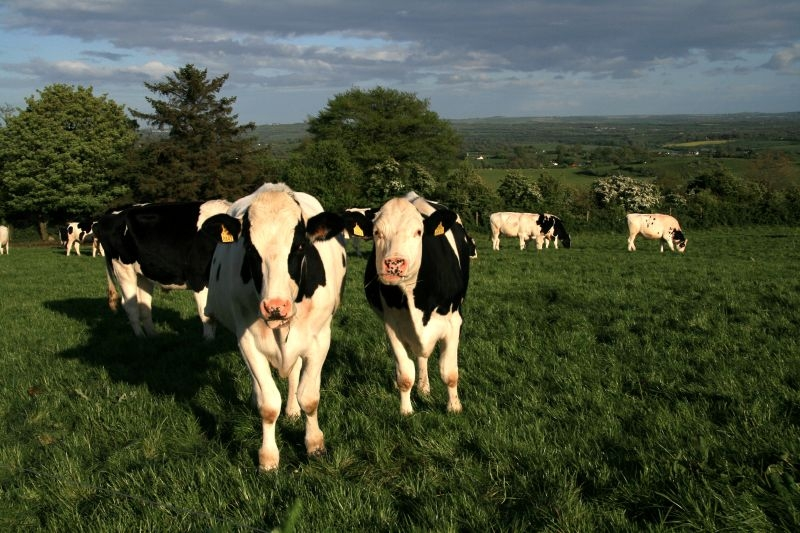
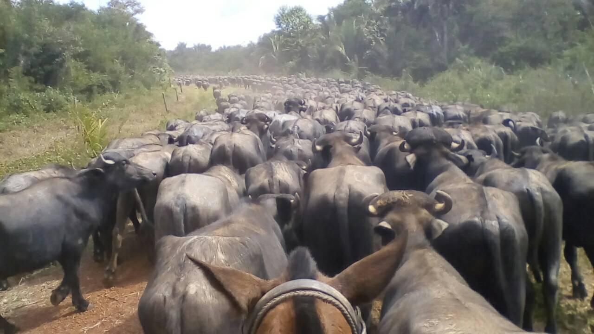
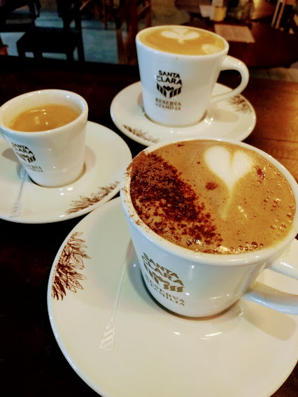

Meus estudos
Estudei na Univerdad Nacional Experimental Romulo Gallegos na mesma cidade onde nasci, ali me formei como Engheneiro Agronomo Pecuario Alem disso tambem estudei Forenses e Criminalistica em outra cidade nos finais de semana. Logo depois que me formei fui contratada pelo Ministerio de Agriculutura na capital, inspecionando as empresas de laticínios. Apos da minha chegada no Brasil 3 anos depois fiz um curso de Barista, e agora estou estudando o curso de Front-end.
Meus trabalhos
Ministerio De Agriculutura y Tierras
Fui contratada depois de me formar, trabalhei 11 meses na area de laticínios, inspecionando todas as empresas publicas e privadas, dando asesorias aos donos. Tambem fazia eventos publicos para que o povo pudesse conhecer de onde vinha os produtos laticínios que estavan na sua mesa.
Fazenda Agrobúfalo
Cheguei no Brasil por causa dessa oportunidade, trabalhei ali Como Tecnico Pecuario durante 9 meses, ali tinha que fazer um grande melhoramento do manejo do gado ja que eles estava praticamente salvajem, melhorar a alimentaçao, realizar vermifugos, vacinas, etc. Isto para obter um grande objetivo no final que era aumentar a produçao carne.
Padaria Artesanal
1 ano depois fui contratada numa padaria onde fui aprendendo coisas diferentes, fiquei apaixonada pelo arte de fazer café, então a empresa me forneceu um curso de Barista, fiz um curso de barista teorico pelan minha parte e ali fiz o curso prático.
Meus Objetivos Professionais
- Aprender um novo idioma
- Aprender mais sobre programação
- Ser uma grande programadora na area de Front-end